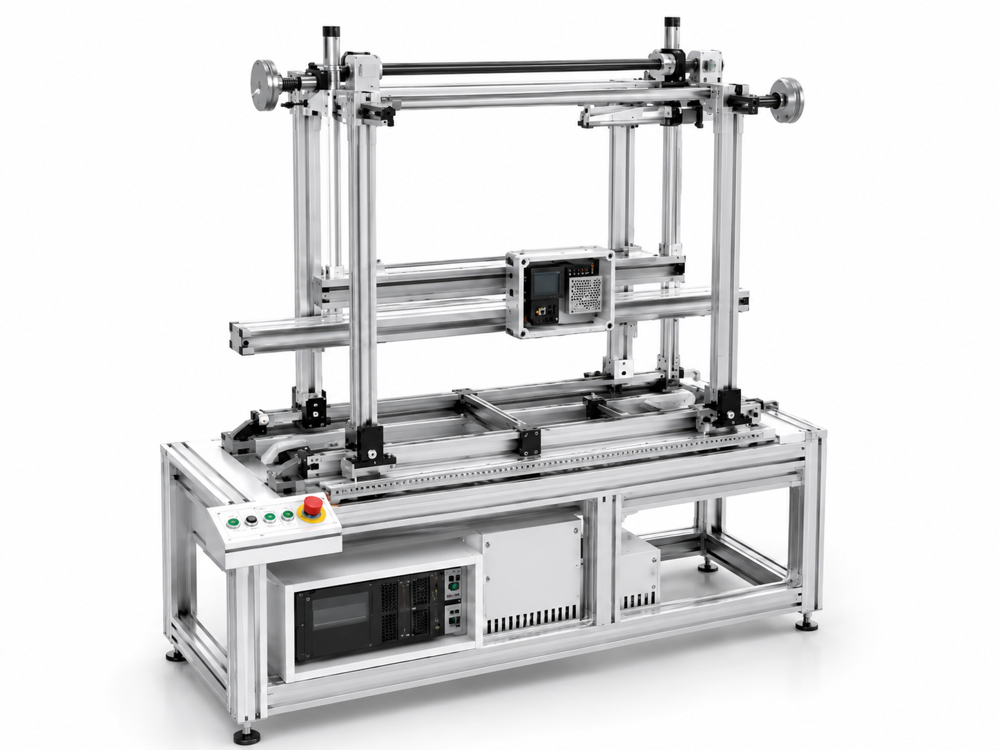

AGRICULTURE
수확 전에 품질을,
유통 전에 등급을
초분광·열화상 영상으로 당도, 수분(함수율), 경도, 중량, 착색 상태를 비파괴 방식으로 현장에서 즉시 판별합니다. 스마트팜부터 산지 유통 단계까지 품질 데이터를 표준화해, 선별·등급 판정의 정확도와 속도를 함께 끌어올립니다.

초분광·열화상 영상으로 당도, 수분(함수율), 경도, 중량, 착색 상태를 비파괴 방식으로 현장에서 즉시 판별합니다. 스마트팜부터 산지 유통 단계까지 품질 데이터를 표준화해, 선별·등급 판정의 정확도와 속도를 함께 끌어올립니다.

V자형 레일 이송 구조 기반 Plug & Play 선별 시스템
부피·중량·착색·당도·수분·경도 측정 모듈을 필요에 따라 조합하는 모듈형 플랫폼입니다. LWIR 국소가열 분석, 착색 측정, 접촉형 인디케이터, 비접촉 복원 응용, 마이크로 분광 센서 모듈을 AI 제어 시스템과 자동인식 방식으로 연결합니다.
고객군은 개별 농가(Compact Type)와 산지 유통센터·APC(Industrial Type)로 나뉘며, 충주 APC 현장 조사 결과 외산 장비 중심 시장에서 국산 모듈형 대안 수요가 확인되었습니다. 수익 모델은 모듈·부품 단위 라이선싱과 AI 품질예측 엔진(SaaS)을 병행합니다.
개별 농가 / 소규모 처리
유연한 설치·운용으로
소규모 선별·포장 효율 극대화
산지 유통센터·APC / 대용량 처리
대용량 처리와 안정적 운용으로
산지 유통센터의 생산성 향상
모듈 및 부품 단위 라이선스를 통해
유연한 도입과 확장 지원
AI 기반 품질 예측 및 분석 서비스를
SaaS 형태로 제공
AI 과일 선별
비파괴 당도 선별
중량 선별·물류 분류
작물 생육 측정
TRL 6→7 현장실증, 2026~27